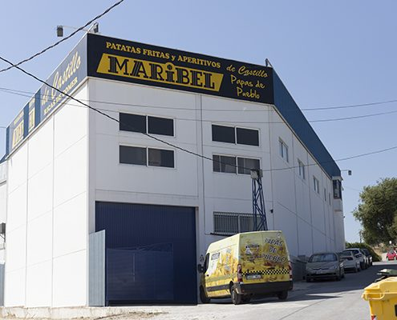
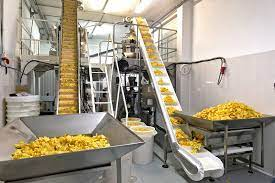
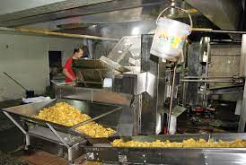
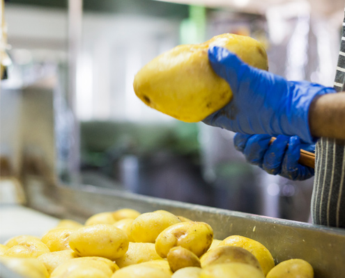
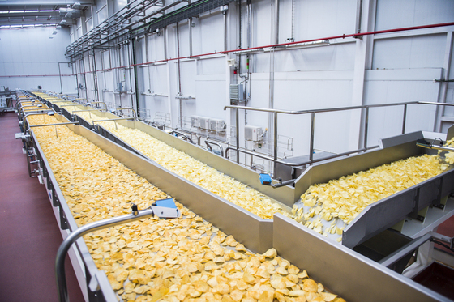
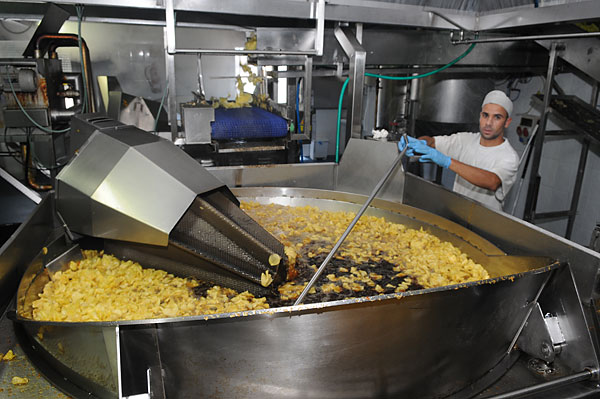
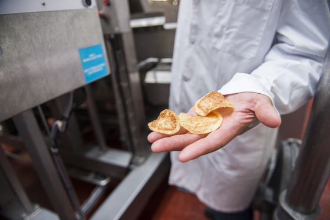

EMPRESA

French, es una empresa fundada en 1987 dedicada a la fabricación de forma artesanal de patatas
fritas, pellets y frutos secos.
Nuestra empresa se sitúa en Villacarrillo (Jaén), ciudad dentro del Parque natural de Cazorla, Segura y las
Villas y muy conocida por ser la ciudad que más aceite de oliva produce a nivel mundial.
En Patatas Fritas French, comercializamos nuestros productos a través de los canales alimentación, horeca e
impulso con marca propia, dónde están presentes en la provincia de Jaén, Albacete, Ciudad Real y en alguna
ocasiones en cualquier punto del país.






Todos los procesos van dirigidos
a seguir una línea de mejora continua, siempre pensando en un impecable servicio para el cliente.
Nuestro objetivo, es llegar a
ser un referente en las patatas fritas y frutos secos tradicionales.